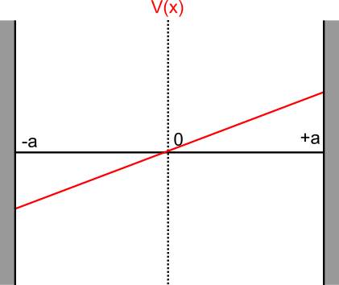

In the absence of a potential gradient, the drift speed of the Brownian particle is zero and the Fokker-Planck equation for its probability distribution is given by,
∂t∂p(x,t)=D∂x2∂2p(x,t)(1)
Let us assume that the particle starts out at x=0, this implies that the probability distribution p(x,0) is given by,
p(x,0)=δ(x),The F.T is given by p(k,0)=1(2)
Solution
Let p(k,t) be the spatial Fourier-transform of p(x,t) given by,
p(k,t)=∫−∞∞e−ikxp(x,t)dx(3)
Applying the F.T (3) to both sides of equation (1) gives,
∂t∂p(k,t)=−Dk2p(k,t)(4)
The general solution of (4) is given by,
p(k,t)=p(k,0)e−Dk2t=e−Dk2t(5)
Taking a reverse fourier transform gives,
p(x,t)=2π1∫−∞∞eikx−Dk2tdk(6)
To solve (6), we need to complete the square in the exponent to give,
The initial delta distribution thus spreads out over the entire space.
Flat potential on a bounded domain with reflecting boundaries
Setup
Let the brownian particle (with no potential gradient) be bound by reflecting walls at x={−a,a}. In this case, the probability current on both walls of the domain should be zero at all times. This implies,
J(−a,t)=J(a,t)=0(9)
Where J(x,t) is the probability current on the domain that can be obtained from (1) as,
∂t∂p(x,t)=−∂x∂J(x,t)⟹J(x,t)=−D∂x∂p(x,t)(10)
Thus, for the probability current to be zero at x={−a,a},
∂x∂p(x,t)∣∣x=−a=∂x∂p(x,t)∣∣x=a=0(11)
This signifies that the slope of the probability function should be zero at both the boundaries. We must thus solve equation (1) with boundary conditions in (11) and an initial value described by (2).
Stationary solution
Under a stationary distribution, p(x,t)→p(x). Equation (1) is then,
D∂x2∂2p(x)=0⟹∂x∂p(x)=c1⟹p(x)=c1x+c2(12)
Where c1 and c2 are constants.
The only way for (12) to satisfy the boundary condition in (11) is if c1=0. In addition, the normalization condition for p(x) (∫−aap(x)=1) gives the solution,
p(x)=2a1(13)
Time-dependent solution
Let the time dependent solution for the above system be given by,
p(x,t)=X(x)T(t)(14)
Then, equation (1) implies,
XT˙=DTX¨(15)
Where the dot notation is used to denote a derivative with respect to the relevant variable. Rewriting this, we get
TT˙=DXX¨(16)
Both sides of this equation are dependent on two different variables and hence must be equal to the same constant (say k). Then, the equation can be separated as,
T˙=kT and X¨=DkX(17)
The general solution for both equations are given by,
T(t)=cekt(18)X(x)=c1exk/D+c2e−xk/D(19)
The zero current boundary conditions in (11) imply,
∂x∂X∣∣x=±a=0(20)
A non-trivial solution for equations (19) and (20) is possible only when the constant k is negative, which results in complex exponents in equation (19). Thus, equation (19) can be rewritten in the following form without loss of generality,
X(x)=c1cosDωx+c2sinDωx(21)
Where k=−ω2 . Substituting (21) in the boundary conditions defined by (20) gives (and taking γ=ω/D),
For a non-trivial solution of X(x), c1 and c2 cannot be zero simultaneously. As c2=c1tan(γa) from the first equation, the only possible way to get a non-trivial solution is if,
c2=0 and sin(γa)=0(23)
Which means that,
γ=anπ⟹ω=anπD⟹k=−(anπD)2(24)
X(x) is in turn given by,
X(x)=c1cos(anπx),where n∈{±1,±2...}(25)
The full solution can now be written as,
pn(x,t)=ancos(anπx)e−t(anπD)2
Where pn is the nth normal mode with a normalizing constant an. We can write the full distribution as a superposition of all these modes, thus obtaining
p(x,t)=a0+n=1∑∞ancos(anπx)e−t(anπD)2(26)
To satisfy the initial condition,
p(x,0)=a0+n=1∑∞ancos(anπx)=δ(x)(27)
Thus, the coefficients a0,a1,... etc. are just the cosine coefficients of δ(x) and are given by,
As expected, all modes except the zeroth vanish after some time. The exponential decay rate of the first mode, (πD/a)2 determines the rate at which the relaxation to the stationary solution is observed.
Linear potential over an infinite domain
Setup
Let the potential be of the form,
V(x)=f0x(30)
The force on the particle, ∇V(x) is then f0 and under the assumption of an overdamped medium the particle drifts at a velocity (v0) given by,
v0=ηf0(31)
Where η is the friction coefficient in the medium. The Fokker-Planck equation for such a particle is given by,
∂t∂p(x,t)=−v0∂x∂p(x,t)+D∂x2∂2p(x,t)(32)
Solution
Once again, taking a fourier transform p(k,t)=∫−∞∞e−ikxp(x,t) on both sides gives us,
∂t∂p(k,t)=v0ikp(k,t)−Dk2p(k,t)(33)
Integrating, we get
p(k,t)=e(v0ik−Dk2)t(34)
Where, p(k,0)=1 due to the initial condition. Consequently, we can take an inverse Fourier transform to get,
p(x,t)=2π1∫−∞∞eikx+v0ikt−Dk2tdk(35)
Taking x−v0t=x~, we can integrate as in equation (7) to get,
p(x,t)=4πDte−4Dt(x−v0t)2
So, the probability distribution behaves similar to the one in a flat potential, except it drifts with a constant velocity v0.
Linear potential on a bounded domain with reflecting boundaries
Setup

In the case of a reflecting wall on both ends, the zero current condition in equation (9) applies again. The probability current in this case is, however, obtained from equation (32) as
J(x,t)=v0p(x,t)−D∂x∂p(x,t)(35)
and must be zero at x=±a.
[v0p(x,t)−D∂x∂p(x,t)]x=±a=0(36)
Solution
Assuming a separable solution of form p(x,t)=X(x)T(t), the Fokker-Planck equation reads,
XT˙=−v0TX˙+DTX¨(37)
The time dependent and space dependent parts must thus be separately equal to a constant k, such that
T˙=kT(38)X¨−Dv0X˙−DkX=0(39)
Substituting X(x)=eαx in equation (39),
eαx(α2−Dv0α−Dk)=0(40)
Where the term on the right is the characteristic equation in this case. For non-trivial solutions, it must be equal to zero, implying
α=2Dv0±v02+4kD(41)
The general solution for (39) is the superposition of these two values of α, i.e.,
X(x)=c1e(β+γ)x+c2e(β−γ)x(42)
Where γ=v02+4kD/2D and β=v0/2D. Substituting this solution in the boundary conditions in equation (36) yields,